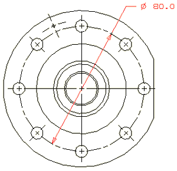
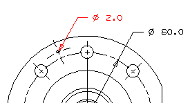
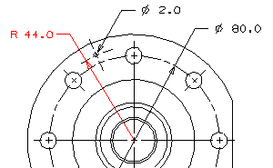

Dimension the bolt hole circle with a diameter dimension.

Dimension the diameter of the small hole in the flange area, using one arrowhead pointing toward the hole.

|
Tip |
Zoom in very close. |
Dimension the distance from the center of the part to the center of the small hole near the edge of the flange.
Keep the arrowhead within the radius.
Place the leader to the right of the dimension.
